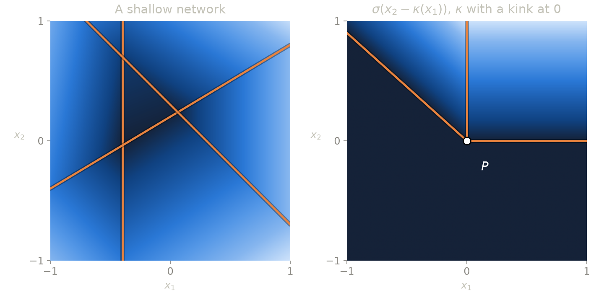

On the (non-)closedness of the set of ReLU networks
If a sequence of neural networks of a fixed size converges, is the limit still a neural network of the same size?
Why should we care?
Training a neural network means minimizing some energy $E$ over a set consisting of neural networks of a fixed architecture. Minimizing such functional falls in the context of the calculus of variations, and under some standard assumptions on $E$, a minimizer exists in the classical function spaces, usually Sobolev spaces.
However, when minimizing over a subset (here, of neural networks), a necessary condition for existence of minimizers is the closedness of the set. If not, the weights may escape to infinity while the functions converge to something no network of that size can represent (this is the "coercivity gap" of [6]).
The paper in a nutshell
- Shallow ReLU networks of a fixed size are weakly closed in Sobolev spaces. So the Deep Ritz method, Sobolev training and Lipschitz learning always admit an optimal network of any fixed size.
- Two layers ReLU networks are not closed in Sobolev spaces. This disproves a conjecture of [1].
Shallow networks: neurons that collapse
We consider shallow networks with at most $N$ neurons on a bounded, open and connected set $\Omega\subset\mathbb R^d$, $$ \mathcal N_N = \left\{ u(x) = \sum_{i=1}^N a_i\,\sigma(w_i\cdot x + b_i) + c \right\}. $$ The classical way to leave $\mathcal N_N$ is to make two neurons collapse onto each other: $$ \frac{1}{\varepsilon}\Big(\sigma(x+\varepsilon) - \sigma(x)\Big) \xrightarrow[\varepsilon\to 0]{} \mathbf 1_{\{x>0\}}. $$ The outer weights $\pm 1/\varepsilon$ explode and the limit jumps, so it is not a network. This is why $\mathcal N_N$ is not closed in $L^p$ [1] (nor in Sobolev spaces for smooth activations [2]).
Dashed: the two neurons, whose outer weights explode. Blue: their sum $u_\varepsilon$ on $(-1,1)$, which converges to $u_0$, a jump of height $J$ plus the neuron $A\sigma(x)$.
The neurons explode, but their sum does not. To create a jump $J$, the sum has slope $J/\varepsilon$ on an interval of length $\varepsilon$, which costs $$ \int_{-\varepsilon}^0 |u_\varepsilon'|^p\,dx = |J|^p\,\varepsilon^{1-p} \xrightarrow[\varepsilon\to 0]{} \infty \qquad \text{for } p > 1. $$ So a sequence bounded in $W^{1,p}$ cannot create a jump, and without a jump ($J=0$) the two neurons merge into one. This is our first result:
For $p>d$ this follows from the uniform closedness proved in [1]. The new case is $p\le d$, where Sobolev functions can be discontinuous: it includes the Deep Ritz method in $H^1$ for $d\ge 2$.
Proof idea: clusters. Group the neurons whose break hyperplanes converge to the same hyperplane $H = \{z = 0\}$, with $z(x) = w\cdot x + b$. Away from a thin band around $H$, such a cluster is exactly $\mathbf 1_{\{z>0\}}P$ with $P$ affine, so it converges to $m + q\,\mathbf 1_{\{z>0\}}$ with $m, q$ affine: a "neuron with a jump", or generalized response [3]. A Sobolev limit has no jump, so $q$ vanishes on $H$, i.e. $q = Az$, and $$ q\,\mathbf 1_{\{z>0\}} = A\,z\,\mathbf 1_{\{z>0\}} = A\,\sigma(z). $$ Each cluster collapses to at most one neuron. For instance, take three neurons whose break lines rotate towards $\{x_1 = 0\}$: $$ \begin{aligned} u_\varepsilon(x) = {} & \frac{\sigma(x_1+\varepsilon x_2) + \sigma(x_1-\varepsilon x_2)}{\sqrt\varepsilon} \\ & + \Big(A - \frac{2}{\sqrt\varepsilon}\Big)\,\sigma(x_1). \end{aligned} $$ Here $P = Ax_1$ exactly: $u_\varepsilon = A\sigma(x_1)$ outside the wedge $\{|x_1| < \varepsilon|x_2|\}$, and inside it only a tent of height at most $\sqrt\varepsilon$ remains. The weights explode, the gradients stay bounded in $L^2$, and the limit is the single neuron $A\sigma(x_1)$.
Left: the cluster $u_\varepsilon$ with $A = 1$. Right: its profile along the solid line; hover over the map to move it.
Why connected? On $\Omega = (-1,0)\cup(0,1)$, the jump can hide in the hole: $(n+1)\sigma(x+1/n) - n\sigma(x)$ converges in $L^1_{loc}(\Omega)$ to $(x+1)\mathbf 1_{\{x>0\}}$, which is Lipschitz on $\Omega$ but is not a network.
Deeper networks: a sneaky counterexample
Networks with two hidden layers of widths $N$ and $M$ read $$ u(x) = \sum_{k=1}^M a_k\,\sigma\Big(\sum_{e=1}^N c_{ke}\,\sigma(w_e\cdot x + b_e) + d_k\Big) + c, $$ and we denote their set by $\mathcal N_{N,M}$. Petersen, Raslan and Voigtlaender [1] conjectured that, as for shallow networks, these sets are closed for uniform convergence. This is false:
No jump here: $f$ is continuous and piecewise affine, hence a ReLU network, only a larger one, with five first-layer neurons.
The target. Four vertical walls $$ \begin{aligned} h_1 &= \sigma(x_1 - 1), & h_2 &= \sigma(x_1 - 2), \\ h_3 &= \sigma(3 - x_1), & h_4 &= \sigma(4 - x_1) \end{aligned} $$ give the broken line $K = \lambda h_3 + h_4$, which bends at $x_1 = 3$ and $x_1 = 4$. For offsets $c_1 < c_2 < c_3$, the second-layer neurons $g_j = \sigma(x_2 - c_j - K)$ switch on above the curves $\{x_2 = c_j + K\}$, and $f = \sum_j (g_j + g_j\circ S)$, where $S$ is the reflection across $\{x_1 = 5/2\}$. Passing $x_2$ itself through the first layer, e.g. as $x_2 = \sigma(x_2 + L) - L$, costs a fifth neuron: $f\in\mathcal N_{5,6}$.
The trick. With four first-layer neurons only, $u^\eta$ slightly tilts the walls: $$ \begin{aligned} h^\eta_1 &= \sigma(x_1 - 1 + 2\eta x_2), & h^\eta_2 &= \sigma(x_1 - 2 + \eta x_2), \\ h^\eta_3 &= \sigma(3 - x_1 + \eta x_2), & h^\eta_4 &= \sigma(4 - x_1 + 2\eta x_2). \end{aligned} $$ On the right half, $h_1^\eta - h_2^\eta = 1 + \eta x_2$, so that $$ \frac{h_1^\eta - h_2^\eta - 1}{\eta} = x_2 . $$ The tilt carries information about $x_2$ of size $\eta$, which the second layer amplifies with weights of size $1/\eta$. Using this in place of $x_2$ (and $h_3^\eta, h_4^\eta$ on the left half) gives $u^\eta\in\mathcal N_{4,6}$, which converges to $f$ as $\eta\to 0$ while its weights blow up:
The networks $u^\eta\in\mathcal N_{4,6}$ on $(0,5)\times(0,2)$, with $\lambda = 5$ and $c_j = j/10$; the last slider position is the limit $f$. Orange: the curves where a second-layer neuron switches on. Dashed: the first-layer walls.
Why the limit needs a fifth neuron
Proving $u^\eta \to f$ is a computation; the real work is to show that $f\notin\mathcal N_{4,M}$. The key notion is that of a locally shallow function, which coincides with a shallow network near a point $P$. Kinks of a shallow network lie on full hyperplanes, whereas $\sigma(x_2 - \kappa(x_1))$, with $\kappa$ a broken line, has three half-lines of kinks meeting at a point $P$: it is not locally shallow at $P$.

Away from its first-layer lines, a two-hidden-layer network is locally shallow, since its first-layer neurons are affine there. But $f$ is not locally shallow at its twelve bending points, where its kink curves bend across the walls. So any network in $\mathcal N_{4,M}$ representing $f$ must cover these twelve points with its four first-layer lines. Try it: click two points to draw the line through them.
The twelve bending points of $f$ (vertical axis stretched), with its kink curves in faint orange.
With $c_j = j/10$, a non-vertical line contains at most two bending points and a vertical one three. Since $4\times 3 = 12$, the four lines must be the walls $\{x_1 = k\}$. But then the first layer only sees $x_1$, while $f(x) = \sum_j \sigma(x_2 - c_j)$ for $x_1 > 4$: contradiction! In dimension $3$ the same argument works with segments, and a rescaled copy of the construction fits in any bounded open set.
Consequences for learning
With the direct method, closedness gives optimal shallow networks:
- Deep Ritz [4]: convex energies $$ E(u) = \int_\Omega F(x,u,\nabla u)\,dx + \int_{\partial\Omega} G(x,u)\,d\mathcal H^{d-1}, $$ e.g. the Poisson equation with Robin conditions, or with Dirichlet conditions imposed exactly through networks $\varphi\,u$, $\varphi = 0$ on $\partial\Omega$.
- Sobolev training [5]: $E(u) = \alpha\|u - f\|^p_{L^p} + \gamma\|\nabla u - g\|^p_{L^p}$.
- Lipschitz learning: a loss plus a penalty $\lambda\,\mathrm{Lip}(u)$, for robust classifiers ($p=\infty$).
For $p=1$, closedness holds but compactness fails, and some energies have no minimizer, neither over $\mathcal N_1$ nor over $W^{1,1}$.
Which parameters? The theorem gives an optimal function, not optimal parameters: by positive homogeneity, $(a_i, w_i, b_i)\mapsto(a_i/t, t w_i, t b_i)$ leaves the network unchanged. Weight decay fixes this: the minimizers of $E(u_\theta) + \lambda\|\theta\|^2$ converge (up to subsequences), as $\lambda\to 0$, to a minimizer of $E$ with minimal parameter norm.
Deeper networks. Existence fails even for the nicest energies: Sobolev training with target $f$ over $\mathcal N_{4,6}$ has infimum $0$ (take $u^\eta$), which is not attained, and the parameters of every minimizing sequence blow up (bottom chart of the third figure). For deep networks, regularization is not only good practice: it is needed for an optimal network to exist at all.
Open questions
- Is $\mathcal N_{N,M}$ closed in $C([a,b])$ in dimension one? Our counterexample needs a second coordinate to tilt the walls.
- Networks with more than two hidden layers are probably not closed either, but our argument does not directly extend to them.
Details and proofs are in the companion article.
Companion article :
-
On the (non-)closedness of the set of ReLU networks
(2026),
with L. BUNGERT,
Preprint.
References :
-
Topological properties of the set of functions generated by neural networks of fixed size
(2021),
P. PETERSEN, M. RASLAN and F. VOIGTLAENDER,
Foundations of Computational Mathematics. -
Nonclosedness of sets of neural networks in Sobolev spaces
(2021),
S. MAHAN, E. J. KING and A. CLONINGER,
Neural Networks. -
On the existence of optimal shallow feedforward networks with ReLU activation
(2024),
S. DEREICH and S. KASSING,
Journal of Machine Learning. -
The Deep Ritz method: a deep learning-based numerical algorithm for solving variational problems
(2018),
W. E and B. YU,
Communications in Mathematics and Statistics. -
Sobolev training for neural networks
(2017),
W. M. CZARNECKI et al.,
NeurIPS. -
The coercivity gap in neural PDE solvers: parameter escape and functional convergence
(2026),
E. ZUAZUA,
Preprint.